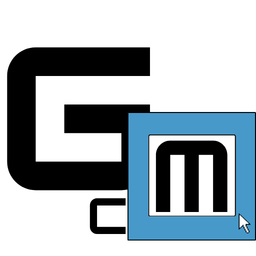

Grave Details
Data Management
Backup Data
Restore Backup
Selected Plot:
None selected
First Name
Middle Name
Surname (Last Name)
Date of Birth
Date of Death
Notes / Family Info
Save Record
Clear Grave
Record saved successfully!